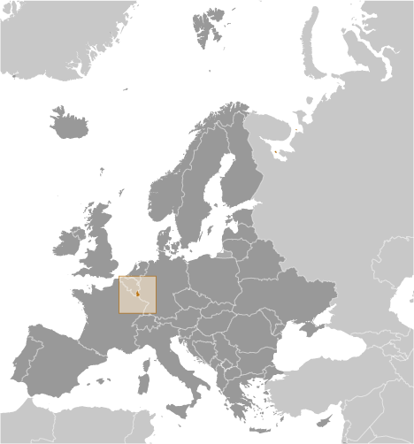
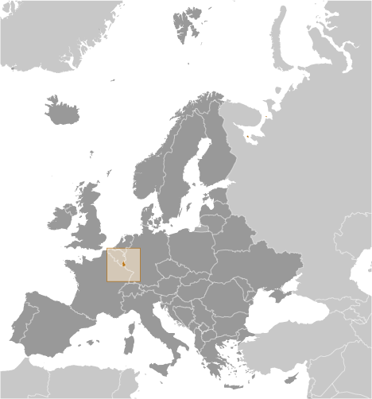

Europe :: LUXEMBOURG
Introduction :: LUXEMBOURG
-
Founded in 963, Luxembourg became a grand duchy in 1815 and an independent state under the Netherlands. It lost more than half of its territory to Belgium in 1839 but gained a larger measure of autonomy. In 1867, Luxembourg attained full independence under the condition that it promise perpetual neutrality. Overrun by Germany in both world wars, it ended its neutrality in 1948 when it entered into the Benelux Customs Union and when it joined NATO the following year. In 1957, Luxembourg became one of the six founding countries of the EEC (later the EU), and in 1999 it joined the euro currency zone.
Geography :: LUXEMBOURG
-
Western Europe, between France and Germany49 45 N, 6 10 EEuropetotal: 2,586 sq kmland: 2,586 sq kmwater: 0 sq kmcountry comparison to the world: 179slightly smaller than Rhode Island; about half the size of Delawaretotal: 327 kmborder countries (3): Belgium 130 km, France 69 km, Germany 128 km0 km (landlocked)none (landlocked)modified continental with mild winters, cool summersmostly gently rolling uplands with broad, shallow valleys; uplands to slightly mountainous in the north; steep slope down to Moselle flood plain in the southeastmean elevation: 325 melevation extremes: lowest point: Moselle River 133 mhighest point: Buurgplaatz 559 miron ore (no longer exploited), arable landagricultural land: 50.7%arable land 24%; permanent crops 0.6%; permanent pasture 26.1%forest: 33.5%other: 15.8% (2011 est.)0 sq km (2012)most people live in the south, on or near the border with Franceoccasional floodingair and water pollution in urban areas, soil pollution of farmlandparty to: Air Pollution, Air Pollution-Nitrogen Oxides, Air Pollution-Persistent Organic Pollutants, Air Pollution-Sulfur 85, Air Pollution-Sulfur 94, Air Pollution-Volatile Organic Compounds, Biodiversity, Climate Change, Climate Change-Kyoto Protocol, Desertification, Endangered Species, Hazardous Wastes, Law of the Sea, Marine Dumping, Ozone Layer Protection, Ship Pollution, Tropical Timber 83, Tropical Timber 94, Wetlandssigned, but not ratified: Environmental Modificationlandlocked; the only grand duchy in the world
People and Society :: LUXEMBOURG
-
594,130 (July 2017 est.)country comparison to the world: 171noun: Luxembourger(s)adjective: LuxembourgLuxembourger 53.3%, Portuguese 16.2%, French 7.2%, Italian 3.5%, Belgian 3.4%, German 2.2%, British 1.1%, other 13.2%note: data represent population by nationality (2016 est.)Luxembourgish (official administrative and judicial language and national language (spoken vernacular)) 88.8%, French (official administrative, judicial, and legislative language) 4.2%, Portuguese 2.3%, German (official administrative and judicial language) 1.1%, other 3.5% (2011 est.)Roman Catholic 87%, other (includes Protestant, Jewish, and Muslim) 13% (2000)0-14 years: 16.77% (male 51,333/female 48,296)15-24 years: 12.18% (male 37,047/female 35,310)25-54 years: 44.27% (male 134,986/female 128,028)55-64 years: 11.77% (male 35,450/female 34,457)65 years and over: 15.02% (male 39,786/female 49,437) (2017 est.)total dependency ratio: 43.6youth dependency ratio: 23.5elderly dependency ratio: 20.1potential support ratio: 5 (2015 est.)total: 39.3 yearsmale: 38.7 yearsfemale: 39.9 years (2017 est.)country comparison to the world: 541.98% (2017 est.)country comparison to the world: 4711.5 births/1,000 population (2017 est.)country comparison to the world: 1707.3 deaths/1,000 population (2017 est.)country comparison to the world: 12315.5 migrant(s)/1,000 population (2017 est.)country comparison to the world: 3most people live in the south, on or near the border with Franceurban population: 90.7% of total population (2017)rate of urbanization: 1.46% annual rate of change (2015-20 est.)LUXEMBOURG (capital) 107,000 (2014)at birth: 1.06 male(s)/female0-14 years: 1.06 male(s)/female15-24 years: 1.05 male(s)/female25-54 years: 1.05 male(s)/female55-64 years: 1.03 male(s)/female65 years and over: 0.79 male(s)/femaletotal population: 1.01 male(s)/female (2016 est.)30.1 years (2015 est.)10 deaths/100,000 live births (2015 est.)country comparison to the world: 150total: 3.4 deaths/1,000 live birthsmale: 3.8 deaths/1,000 live birthsfemale: 3 deaths/1,000 live births (2017 est.)country comparison to the world: 209total population: 82.3 yearsmale: 79.9 yearsfemale: 84.9 years (2017 est.)country comparison to the world: 131.62 children born/woman (2017 est.)country comparison to the world: 1786.6% of GDP (2014)country comparison to the world: 902.92 physicians/1,000 population (2015)5.4 beds/1,000 population (2010)improved:urban: 100% of populationrural: 100% of populationtotal: 100% of populationunimproved:urban: 0% of populationrural: 0% of populationtotal: 0% of population (2015 est.)improved:urban: 97.5% of populationrural: 98.5% of populationtotal: 97.6% of populationunimproved:urban: 2.5% of populationrural: 1.5% of populationtotal: 2.4% of population (2015 est.)NANA<100 (2016 est.)22.6% (2016)country comparison to the world: 744.1% of GDP (2012)country comparison to the world: 118total: 14 yearsmale: 14 yearsfemale: 14 years (2012)total: 17.4%male: 18.9%female: 15.7% (2015 est.)country comparison to the world: 59
Government :: LUXEMBOURG
-
conventional long form: Grand Duchy of Luxembourgconventional short form: Luxembourglocal long form: Grand Duchee de Luxembourglocal short form: Luxembourgetymology: from the Celtic "lucilem" (little) and the German "burg" (castle or fortress) to produce the meaning of the "little castle"constitutional monarchyname: Luxembourggeographic coordinates: 49 36 N, 6 07 Etime difference: UTC+1 (6 hours ahead of Washington, DC, during Standard Time)daylight saving time: +1hr, begins last Sunday in March; ends last Sunday in October12 cantons (cantons, singular - canton); Capellen, Clervaux, Diekirch, Echternach, Esch-sur-Alzette, Grevenmacher, Luxembourg, Mersch, Redange, Remich, Vianden, Wiltz1839 (from the Netherlands)National Day (Birthday of Grand Duke HENRI), 23 June; note - this date of birth is not the true date of birth for any of the Royals, but the national festivities were shifted in 1962 to allow observance during a more favorable time of yearhistory: previous 1842 (heavily amended 1848, 1856); latest effective 17 October 1868amendments: proposed by the Chamber of Deputies or by the monarch to the Chamber; passage requires at least two-thirds majority vote by the Chamber in two successive readings three months apart; a referendum can be substituted for the second reading if approved by more than one-quarter of the Chamber members or by 25,000 valid voters; adoption by referendum requires a majority of all valid voters; amended many times, last in 2009 (2016)civil law systemaccepts compulsory ICJ jurisdiction; accepts ICCt jurisdictioncitizenship by birth: limited to situations where the parents are either unknown, stateless, or when the nationality law of the parents' state of origin does not permit acquisition of citizenship by descent when the birth occurs outside of national territorycitizenship by descent: at least one parent must be a citizen of Luxembourgdual citizenship recognized: yesresidency requirement for naturalization: 7 years18 years of age; universal and compulsorychief of state: Grand Duke HENRI (since 7 October 2000); Heir Apparent Prince GUILLAUME, son of the monarch, born 11 November 1981head of government: Prime Minister Xavier BETTEL (since 4 December 2013); Deputy Prime Minister Etienne SCHNEIDER (since 4 December 2013)cabinet: Council of Ministers recommended by the prime minister, appointed by the monarchelections/appointments: the monarchy is hereditary; following elections to the Chamber of Deputies, the leader of the majority party or majority coalition usually appointed prime minister by the monarch; deputy prime minister appointed by the monarch; prime minister and deputy prime minister are responsible to the Chamber of Deputiesdescription: unicameral Chamber of Deputies or Chambre des Deputes (60 seats; members directly elected in multi-seat constituencies by proportional representation vote; members serve 5-year terms); note - a 21-member Council of State appointed by the Grand Duke on the advice of the prime minister serves as an advisory body to the Chamber of Deputieselections: last held on 20 October 2013 (next to be held by October 2018)election results: percent of vote by party - CSV 33.7%, LSAP 20.3%, DP 18.3%, Green Party 10.1%, ADR 6.6%, The Left 4.9%, other 6.1%; seats by party - CSV 23, LSAP 13, DP 13, Green Party 6, ADR 3, The Left 2highest court(s): Superior Court of Justice includes Court of Appeal and Court of Cassation (consists of 27 judges on 9 benches); Constitutional Court (consists of 9 members)judge selection and term of office: judges of both courts appointed by the monarch for lifesubordinate courts: Court of Accounts; district and local tribunals and courtsAlternative Democratic Reform Party or ADR [Jean SCHOOS]Christian Social People's Party or CSV [Marc SPAUTZ]Democratic Party or DP [Corinne CAHEN]Green Party [Francoise FOLMER and Christian KMIOTEK]Luxembourg Socialist Workers' Party or LSAP [Claude HAAGEN]The Left (dei Lenk/la Gauche) [collective leadership, Central Committee]other minor partiesBusiness Federation Luxembourg or FEDIL [Nicolas BUCK]Centrale Paysanne [Marc FISCH] (federation of agricultural producers)Chamber of Artisans (Chambre des Metiers) [Tom OBERWEIS]Chamber of Commerce (Chambre de Commerce) [Carlo THELEN]Chambre des Salaries or CSL [Jean-Claude REDING]General Association of Officials (Confederation Generale de la Fonction Publique or CGFP) [Romain WOLFF] (trade union representing civil service)Greenpeace [Raymond AENDEKERK]Luxembourg Confederation of Christian Trade Unions or LCGB [Patrick DURY] (center-right trade union)Luxembourg Association of Bankers and Insurance Employees or ALEBA [Roberto SCOLATI]Luxembourg Bankers Association or ABBL [Yves MAAS]Mouvement Ecologique [Blanche WEBER] (environmental protection)Confederation of Independent Trade Unions or OGB-L [Andre ROELTGEN] (center-left trade union)ADB (nonregional member), Australia Group, Benelux, BIS, CD, CE, EAPC, EBRD, ECB, EIB, EMU, ESA, EU, FAO, FATF, IAEA, IBRD, ICAO, ICC (national committees), ICCt, ICRM, IDA, IEA, IFAD, IFC, IFRCS, ILO, IMF, IMO, Interpol, IOC, IOM, IPU, ISO, ITSO, ITU, ITUC (NGOs), MIGA, NATO, NEA, NSG, OAS (observer), OECD, OIF, OPCW, OSCE, PCA, Schengen Convention, UN, UNCTAD, UNESCO, UNHCR, UNIDO, UNRWA, UPU, WCO, WHO, WIPO, WMO, WTO, ZCchief of mission: Ambassador Sylvie LUCAS (since 16 September 2016)chancery: 2200 Massachusetts Avenue NW, Washington, DC 20008telephone: [1] (202) 265-4171FAX: [1] (202) 328-8270consulate(s) general: New York, San FranciscoUS chief of mission: Ambassador (vacant); Charge d'Affaires Alison SHORTER-LAWRENCE (since 20 January 2017)embassy: 22 Boulevard Emmanuel Servais, L-2535 Luxembourg Citymailing address: Unit 3560, APO-AE 09126-3560 (official mail)telephone: [352] 46-01-23 00FAX: [352] 46-14-01three equal horizontal bands of red (top), white, and light blue; similar to the flag of the Netherlands, which uses a darker blue and is shorter; the coloring is derived from the Grand Duke's coat of arms (a red lion on a white and blue striped field)red, rampant lion; national colors: red, white, light bluename: "Ons Heemecht" (Our Motherland); "De Wilhelmus" (The William)lyrics/music: Michel LENTZ/Jean-Antoine ZINNEN; Nikolaus WELTER/unknownnote: "Ons Heemecht," adopted 1864, is the national anthem, while "De Wilhelmus," adopted 1919, serves as a royal anthem for use when members of the grand ducal family enter or exit a ceremony in Luxembourg
Economy :: LUXEMBOURG
-
This small, stable, high-income economy has historically featured solid growth, low inflation, and low unemployment. Luxembourg, the only Grand Duchy in the world, is a landlocked country in northwestern Europe surrounded by Belgium, France, and Germany. Despite its small landmass and small population, Luxembourg is the second-wealthiest country in the world when measured on a gross domestic product (PPP) per capita basis. Luxembourg has one of the highest current account surpluses as a share of GDP in the euro zone, and it maintains a healthy budgetary position and the lowest public debt level in the region.Since 2002, the Luxembourg Government has proactively implemented policies and programs to support economic diversification and to attract foreign direct investment. The government focused on key innovative industries that showed promise for supporting economic growth: logistics, information and communications technology (ICT); health technologies, including biotechnology and biomedical research; clean energy technologies;, and most recently, space technology and financial services technologies. The economy has evolved and flourished, posting a strong GDP growth rate – projected at 4.5% in 2017-2018, far outpacing the European average of 1.8%.Luxembourg remains a financial powerhouse – the financial sector accounts for more than 35% of GDP - due to the exponential growth of the investment fund sector through the launch and development of cross-border funds (UCITS) in the 1990s. Luxembourg is the world’s second-largest investment fund asset domicile, after the US, with $4 trillion of assets in custody in financial institutions.Luxembourg has lost some of its advantage as a favorable tax location because of OECD and EU pressure, as well as the “LuxLeaks” scandal, which revealed advantageous tax treatments offered to foreign corporations. In 2015, the government’s compliance with EU requirements to implement automatic exchange of tax information on savings accounts - thus ending banking secrecy - has constricted banking activity. Likewise, changes to the way EU members collect taxes from e-commerce has cut Luxembourg’s sales tax revenues, requiring the government to raise additional levies and to reduce some direct social benefits as part of the tax reform package of 2017.$60.93 billion (2016 est.)$57.75 billion (2015 est.)$54.93 billion (2014 est.)note: data are in 2016 dollarscountry comparison to the world: 105$59.98 billion (2016 est.)4.2% (2016 est.)4% (2015 est.)5.6% (2014 est.)country comparison to the world: 64$105,800 (2016 est.)$103,900 (2015 est.)$102,200 (2014 est.)note: data are in 2016 dollarscountry comparison to the world: 422.8% of GDP (2016 est.)24% of GDP (2015 est.)23.8% of GDP (2014 est.)country comparison to the world: 69household consumption: 29.2%government consumption: 16.3%investment in fixed capital: 17.6%investment in inventories: 0.5%exports of goods and services: 227.9%imports of goods and services: -191.5% (2016 est.)agriculture: 0.2%industry: 12.3%services: 87.4% (2016 est.)grapes, barley, oats, potatoes, wheat, fruits; dairy and livestock productsbanking and financial services, construction, real estate services, iron, metals, and steel, information technology, telecommunications, cargo transportation and logistics, chemicals, engineering, tires, glass, aluminum, tourism, biotechnology0.3% (2016 est.)country comparison to the world: 154266,900note: data exclude foreign workers; in addition to the figure for domestic labor force, about 150,000 workers commute daily from France, Belgium, and Germany (2016 est.)country comparison to the world: 167agriculture: 1.1%industry: 20%services: 78.9% (2013 est.)6.4% (2016 est.)6.8% (2015 est.)country comparison to the world: 84NA%lowest 10%: 3.5%highest 10%: 23.8% (2000)30.4 (2013 est.)26 (2005 est.)country comparison to the world: 124revenues: $25.61 billionexpenditures: $24.68 billion (2016 est.)43.1% of GDP (2016 est.)country comparison to the world: 301.6% of GDP (2016 est.)country comparison to the world: 1520% of GDP (2016 est.)21.6% of GDP (2015 est.)note: data cover general government debt, and includes debt instruments issued (or owned) by government entities other than the treasury; the data include treasury debt held by foreign entities; the data include debt issued by subnational entities, as well as intra-governmental debt; intra-governmental debt consists of treasury borrowings from surpluses in the social funds, such as for retirement, medical care, and unemployment; debt instruments for the social funds are not sold at public auctionscountry comparison to the world: 185calendar year0% (2016 est.)0.1% (2015 est.)country comparison to the world: 500.25% (31 December 2016)0.3% (31 December 2010)note: this is the European Central Bank's rate on the marginal lending facility, which offers overnight credit to banks in the euro areacountry comparison to the world: 143$229.2 billion (31 December 2016 est.)$218.4 billion (31 December 2015 est.)note: see entry for the EU for money supply for the entire euro area; the European Central Bank (ECB) controls monetary policy for the 18 members of the Economic and Monetary Union (EMU); individual members of the EMU do not control the quantity of money circulating within their own borderscountry comparison to the world: 19$271.4 billion (31 December 2016 est.)$271 billion (31 December 2015 est.)country comparison to the world: 35$109.9 billion (31 December 2016 est.)$108.5 billion (31 December 2015 est.)country comparison to the world: 53$47.13 billion (31 December 2015 est.)$63.17 billion (31 December 2014 est.)$78.64 billion (31 December 2013 est.)country comparison to the world: 53$2.823 billion (2016 est.)$2.962 billion (2015 est.)country comparison to the world: 30$16.37 billion (2016 est.)$17.6 billion (2015 est.)country comparison to the world: 72machinery and equipment, steel products, chemicals, rubber products, glassGermany 23.1%, Belgium 16.6%, France 15.4%, Netherlands 5.1% (2016)$19.97 billion (2016 est.)$20.49 billion (2015 est.)country comparison to the world: 70commercial aircraft, minerals, chemicals, metals, foodstuffs, luxury consumer goodsBelgium 29.4%, Germany 24.3%, France 10.3%, US 7%, China 5.8%, Netherlands 4.3%, Mexico 4.3% (2016)$974 million (31 December 2016 est.)$771 million (31 December 2015 est.)country comparison to the world: 125$3.781 trillion (31 March 2016 est.)$3.806 trillion (31 March 2015 est.)country comparison to the world: 7$11.21 billion (31 December 2008 est.)country comparison to the world: 94$NAeuros (EUR) per US dollar -0.9214 (2016 est.)0.885 (2015 est.)0.885 (2014 est.)0.7634 (2013 est.)0.7752 (2012 est.)
Energy :: LUXEMBOURG
-
electrification - total population: 100% (2016)735 million kWh (2015 est.)country comparison to the world: 1586.178 billion kWh (2015 est.)country comparison to the world: 1141.42 billion kWh (2016 est.)country comparison to the world: 517.718 billion kWh (2016 est.)country comparison to the world: 322.023 million kW (2015 est.)country comparison to the world: 11323.7% of total installed capacity (2015 est.)country comparison to the world: 1920% of total installed capacity (2015 est.)country comparison to the world: 1311.7% of total installed capacity (2015 est.)country comparison to the world: 14012.7% of total installed capacity (2015 est.)country comparison to the world: 600 bbl/day (2016 est.)country comparison to the world: 1620 bbl/day (2016 est.)country comparison to the world: 1550 bbl/day (2016 est.)country comparison to the world: 1520 bbl (1 January 2017 es)country comparison to the world: 1590 bbl/day (2016 est.)country comparison to the world: 16656,120 bbl/day (2016 est.)country comparison to the world: 990 bbl/day (2016 est.)country comparison to the world: 17355,900 bbl/day (2016 est.)country comparison to the world: 776 million cu m (2015 est.)country comparison to the world: 981.108 billion cu m (2015 est.)country comparison to the world: 960 cu m (2014 est.)country comparison to the world: 140875 million cu m (2015 est.)country comparison to the world: 610 cu m (1 January 2014 es)country comparison to the world: 16411 million Mt (2013 est.)country comparison to the world: 101
Communications :: LUXEMBOURG
-
total subscriptions: 280,000subscriptions per 100 inhabitants: 48 (July 2016 est.)country comparison to the world: 119total: 813,000subscriptions per 100 inhabitants: 140 (July 2016 est.)country comparison to the world: 162general assessment: highly developed, completely automated and efficient system, mainly buried cablesdomestic: fixed-line teledensity about 50 per 100 persons; nationwide mobile-cellular telephone system with market for mobile-cellular phones virtually saturatedinternational: country code - 352 (2016)Luxembourg has a long tradition of operating radio and TV services for pan-European audiences and is home to Europe's largest privately owned broadcast media group, the RTL Group, which operates 46 TV stations and 29 radio stations in Europe; also home to Europe's largest satellite operator, Societe Europeenne des Satellites (SES); domestically, the RTL Group operates TV and radio networks; other domestic private radio and TV operators and French and German stations available; satellite and cable TV services available (2016).lutotal: 567,698percent of population: 97.5% (July 2016 est.)country comparison to the world: 130
Transportation :: LUXEMBOURG
-
number of registered air carriers: 3inventory of registered aircraft operated by air carriers: 119annual passenger traffic on registered air carriers: 1,830,972annual freight traffic on registered air carriers: 6,309,473,324 mt-km (2015)LX (2016)2 (2013)country comparison to the world: 202total: 1over 3,047 m: 1 (2017)total: 1under 914 m: 1 (2013)1 (2013)gas 142 km; refined products 27 km (2013)total: 275 kmstandard gauge: 275 km 1.435-m gauge (275 km electrified) (2014)country comparison to the world: 125total: 2,899 kmpaved: 2,899 km (includes 152 km of expressways) (2011)country comparison to the world: 16737 km (on Moselle River) (2010)country comparison to the world: 104total: 49by type: bulk carrier 2, cargo 3, chemical tanker 20, container 10, petroleum tanker 2, roll on/roll off 12foreign-owned: 48 (Belgium 11, Denmark 1, France 15, Germany 9, Japan 3, Netherlands 3, Switzerland 1, UK 5)registered in other countries: 18 (Italy 14, Malta 3, Panama 1) (2010)country comparison to the world: 73river port(s): Mertert (Moselle)
Military and Security :: LUXEMBOURG
-
0.49% of GDP (2016)0.48% of GDP (2015)0.42% of GDP (2014)0.42% of GDP (2013)0.42% of GDP (2012)country comparison to the world: 123Luxembourg Army (Armee Luxembourgeoise) (2015)18-24 years of age for male and female voluntary military service; no conscription; Luxembourg citizen or EU citizen with 3-year residence in Luxembourg (2012)
Transnational Issues :: LUXEMBOURG
-
nonestateless persons: 83 (2016)